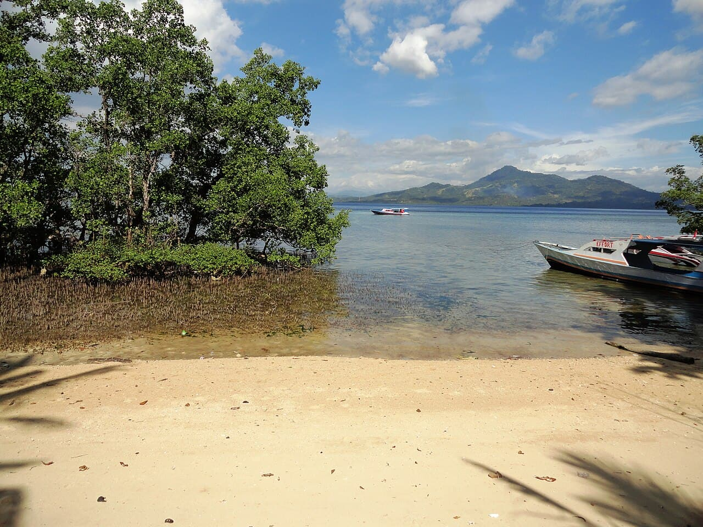

Bunaken
Sulawesi, Indonésie · plongée, snorkeling

Des murs de corail qui plongent à la verticale dès quelques mètres, dans un parc marin national. Tortues et bancs de fusiliers le long du tombant.
- Lieu
- Sulawesi, Indonésie
- Niveau
- Intermédiaire
- Activités
- plongée, snorkeling
- Type d'eau
- Mer / océan
- Coordonnées
- 1.62, 124.76 (position approximative du secteur)
Dangers à connaître
- Courant le long du tombant, variable selon la marée.
- Le vide donne le vertige : surveille ton profondimètre.
Le conseil d'Ocean Buddy
Longe le tombant en gardant le mur à ta droite : tu ne te perdras pas.
Ouvrir dans Ocean Buddy Télécharger sur l'App Store
Source : Description historique Ocean Buddy · vérification externe en attente.